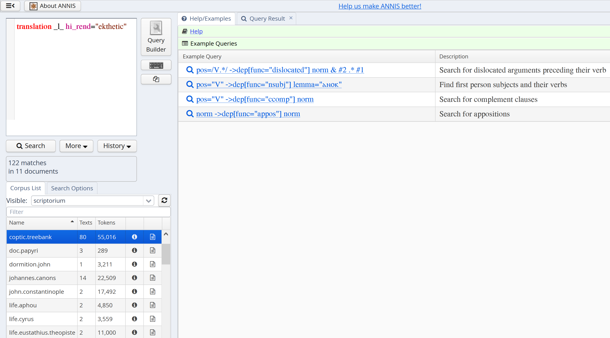
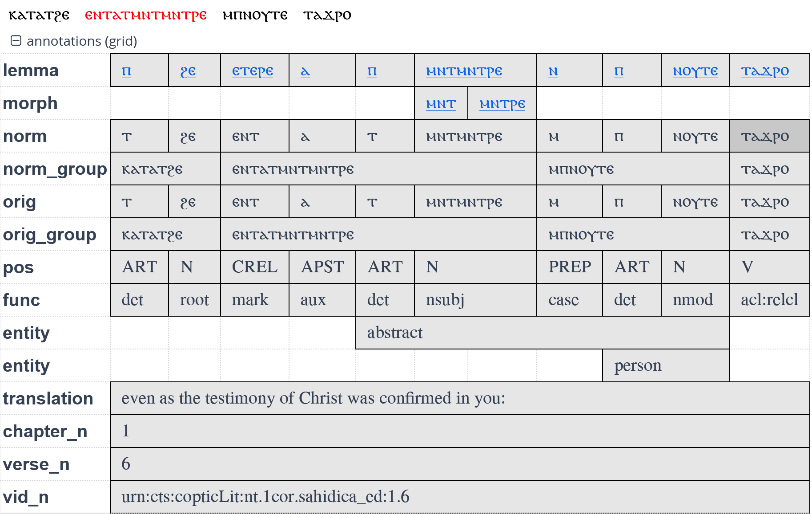
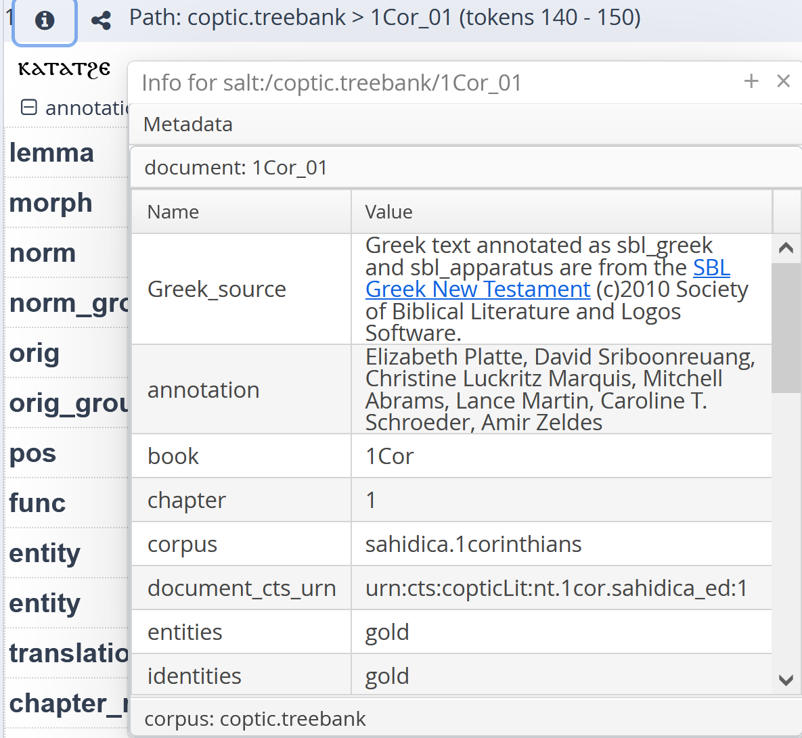
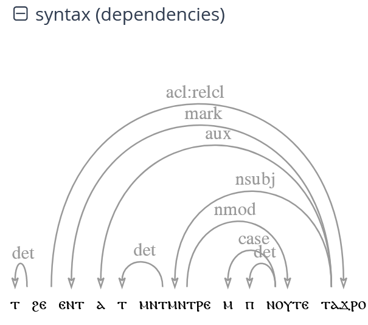
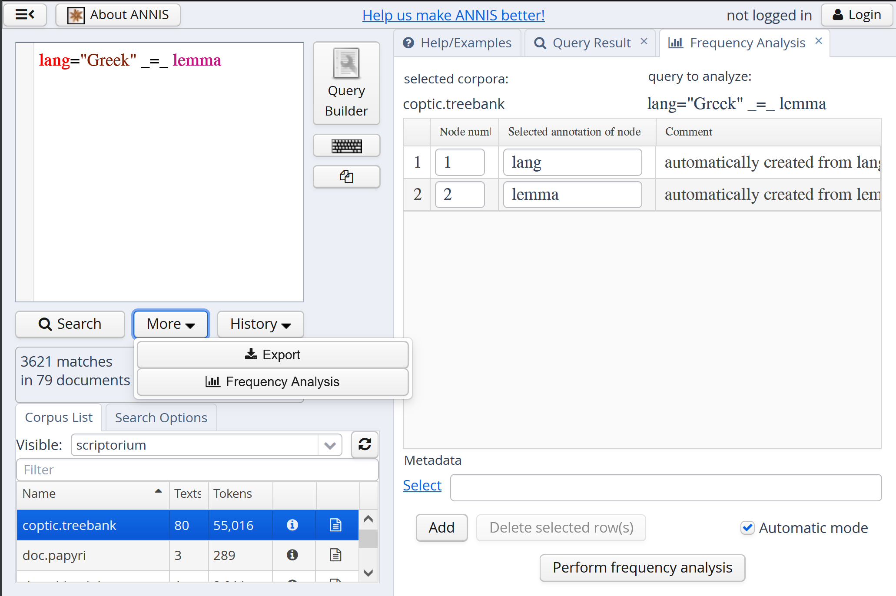
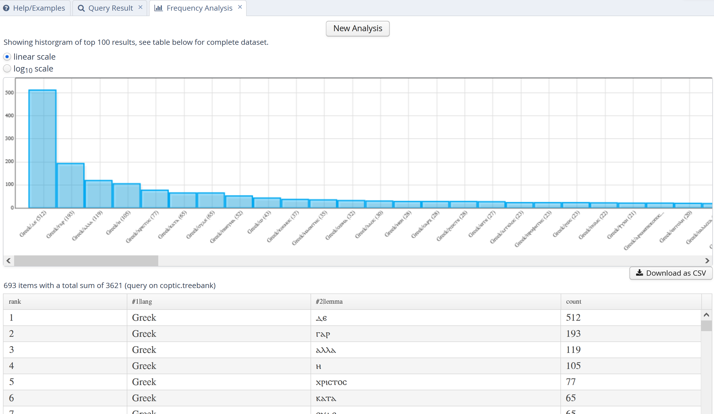

Using ANNIS for search in Coptic corpora
Introduction
The ANNIS search and visualization platform offers highly complex search capabilities for texts provided by Coptic Scriptorium. To get started using ANNIS, go to:
https://annis.copticscriptorium.org/annis/scriptorium
The interface shows a search box at the top left with Coptic works below, and some example queries on the right. All queries in this tutorial are linked to searches in the small Coptic Treebank, but you can change this in the bottom left list.

Cheat sheet
Note searches are run on the Coptic Treebank only by default (you can select other/more corpora in ANNIS)
- norm="ⲧⲉⲓ" (standard form)
- orig="ⲧⲉⲉⲓ" (form as spelled in manuscript)
- lemma="ⲡⲉⲓ" (dictionary entry)
- norm=/.*ⲟⲥ/ (form ends in -ⲟⲥ)
- lang (any item with a language annotation such as Greek, Latin, Hebrew, etc.)
- lang="Greek" (exactly all Greek origin terms)
- pos="V" _o_ lang="Greek" (a verb overlapping Greek material, incl. either part or all of a word)
- pos="VSTAT" (all stative verbs)
- pos=/V.*/ (any kind of verb)
- pos=/CCIRC|CFOC/ (a circumstantial or a focalizing converter)
- morph="ⲙⲛⲧ" (part of a complex unit)
- norm_group="ⲙⲡⲉⲭⲣⲓⲥⲧⲟⲥ" (whole bound group)
- orig_group="ⲙ̇ⲡⲉⲭ︦ⲥ︦" (whole group as spelled)
- norm="ⲛϭⲓ" . norm="ⲧ" (ⲛϭⲓ followed by feminine article)
- lang="Greek" . lang="Greek" (two adjacent Greek words)
- norm=/ⲛⲧⲟⲕ?/ .1,3 lemma="ⲡⲉ" (ⲛⲧⲟ or ⲛⲧⲟⲕ followed by lemma ⲡⲉ within 3 tokens)
- lemma="ⲁⲩⲱ" ^1,5 lemma="ⲟⲛ" (the words ⲁⲩⲱ and ⲟⲛ within 5 tokens of each other)
- pos="N" . pos="PPERO" (noun followed by clitic pronoun)
- norm="ⲁ" . norm="ϥ" . norm="ⲥⲱⲧⲙ" (the sequence ⲁ-ϥ-ⲥⲱⲧⲙ)
- lemma="ⲟⲩ" . norm="ⲉⲃⲟⲗ" . lemma="ϩⲛ" (ⲟⲩ-ⲉⲃⲟⲗ followed by lemma ϩⲛ)
- norm="ⲣ" . lemma="ⲡ" . pos="N" (ⲣ, definite article, Noun)
- norm="ⲉ" . pos="V" . pos="PPERO" (to-infinitive followed by clitic pronoun)
- func="acl:relcl" (relative clauses)
- pos="V" ->dep func="dislocated" (verb governing a dislocated argument)
- pos="V" ->dep func="dislocated" & #2 .* #1 (verb governing a dislocated argument which precedes the verb)
- norm="ⲉⲃⲟⲗ" . lemma="ϩⲛ" _=_ func="fixed" (the fixed expression ⲉⲃⲟⲗ ϩⲛ meaning 'out-of')
- norm="ⲉⲃⲟⲗ" . lemma="ϩⲛ" _=_ func="case" (ⲉⲃⲟⲗ followed by a separate ϩⲛ meaning 'out ... in')
- norm=/.*ⲙ/ _=_ lemma=/.*ⲛ/ _=_ pos="PREP" (preposition ending in -ⲙ with lemma in -ⲛ)
- lang="Latin" & meta::msName=/MONB.*/ (Latin words in MONB manuscripts from the White Monastery)
- norm="ⲛⲟⲩⲧⲉ" & meta::annotation=/.*Krawiec.*/ (the word ⲛⲟⲩⲧⲉ in documents edited by Rebecca Krawiec)
- translation=/.*Lord.*/ & meta::translation=/.*Budge.*/ (the word 'Lord' in translations by Budge)
- norm="ⲉⲛⲉϩ" & meta::redundant="no" (look for ⲉⲛⲉϩ excluding 'redundant' parallel witnesses)
- norm="ⲉⲛⲉϩ" & meta::redundant="yes" (look for ⲉⲛⲉϩ in 'redundant' parallel witnesses)
- hi_rend="ekthetic" (ekthetic letters)
- translation _l_ hi_rend="ekthetic" (ekthetic and sentence initial)
- translation _l_ tok .* hi_rend="ekthetic" & #1 _i_ #3 (ekthetic and non-sentence initial)
- note=/.*sic.*/ (note annotation indicating scribal error)
- morph="ⲣ" . morph _=_ lang="Greek" (complex verb in ⲣ + Greek stem)
- lb_n _i_ norm_group=/.*ⲱ.*/ & lb_n _i_ norm_group=/.*ⲁⲡϫ.*/ & #1 . #3 (two consecutive lines, the first containing ⲱ and the second ⲁⲡϫ)
Words
Where are the words in Coptic?
Words in Coptic can be complex, and the fact that manuscripts use various spellings for words complicates things further. Some terminology can help:
- Bound groups - these are the Coptic units we are used to seeing written between spaces, for example ⲁϥⲥⲱⲧⲙ 'he has heard' is a bound group
- Norm units - these are the components of bound groups, some of which can appear by themselves (like ⲥⲱⲧⲙ 'hear' above) and some of which always appear bound (like the past tense marker ⲁ). Norm units always have a part of speech, such as being a noun (N) or a verb (V), or even an auxiliary in the case of ⲁ.
- Morphs - these units are prefixes or suffixes smaller than norm units, and do not have their own part of speech, for example the complex norm unit ⲙⲛⲧ-ⲁⲧ-ⲥⲱⲧⲙ 'disobedience' has three morphs: the abstract prefix ⲙⲛⲧ (a little like English -ness), ⲁⲧ (like dis-) and ⲥⲱⲧⲙ. Notice that although ⲥⲱⲧⲙ is usually a norm unit (a verb), in this case it is only a smaller morph, since it is part of a bigger noun.
Use the cheat sheet for some commonly used query types, as well as the explanations below. Also see our overview of annotation guidelines for some common annotation practices.
How to search for norms, morphs and groups
You can search for norm units, groups and morphs in ANNIS like this:
Enter the query in the query box and click Search or hit ctrl+Enter (or click the link above). Once you have a search result, you can view all of the available annotations for each result by expanding the [+] next to each annotation layer. Expanding the annotations grid will show you the available annotation layers that can be searched for, such as norm and morph below.

Using orig and orig_group for orthographic variants
Sometimes we want to search not for norm units, but for original spellings found in manuscripts. You can use the following queries to find specific spellings, including supralinear strokes and other diacritics:
Note that diacritics will always be removed in the norm annotations, but will be retained in orig if available in the original transcription. After you have run a search, you can also toggle the visualization between original and normalized spelling by choosing the Base text drop down at the top of your search results and switching between norm_group (the default) and orig_group. It is also possible to switch to norm or orig, to see the text segmented into units, rather than bound groups.
Searching for lemmas
If you want to find all forms of an inflected word, you can search for lemmas instead of norm forms. For example:
This search finds the absolute form ⲕⲱⲧ, but also the reduced form "ⲕⲟⲧ" and even the stative form "ⲕⲏⲧ", which all have the same lemma or dictionary entry. In the annotation grid, lemmas are clickable and link to a search in the Coptic Dictionary Online.
Wild cards and regular expressions
Sometimes it can be useful to search for units or bound group containing some letter or letters. We can do this using wildcard, or 'regular expression' searches. You can run such a search on any annotation layer by using slashes instead of double quotes, and the following operators:
.- any single character?- makes the preceding character optional*- the preceding character any number of times (including zero times)
For example, you can run these searches:
The first example searches for words like ⲥⲱⲧⲡ, ⲥⲟⲧⲡ or ⲥⲉⲧⲡ, with the dot indicating 'any character'. The second example searches for groups beginning with ⲉⲛⲧ or ⲛⲧ (the ⲉ is made optional by the '?'), and may end with anything - .* means any character, any number of times, so it allows the group to end in any way.
There are more regular expression operators available - for more information on regular expression operators, see http://www.regular-expressions.info/.
Tags
Coptic Scriptorium data is annotated with grammatical parts of speech for every norm/orig unit.
The part of speech tagset
The possible parts of speech are divided into coarse categories, which can be searched for using regular expressions:
| Tag | Name | Examples |
|---|---|---|
| A.* | Auxiliary | ⲁ[ϥ], ⲙⲉ[ϥ], ⲧⲣⲉ[ϥ], ... |
| ADV | Adverb | ⲉⲃⲟⲗ, ⲟⲛ, ⲡⲱⲥ |
| ART | Article | ⲡ(ⲉ), ⲧ(ⲉ), ⲛ(ⲉ), ϩⲉⲛ, ⲕⲉ |
| C.* | Converter | ⲉ, ⲉⲧⲉ, ⲛⲉ, ... |
| CONJ | Conjunction | ⲁⲩⲱ, ϫⲉ, ⲏ, ⲙⲏ, ⲉⲓⲧⲉ, ... |
| COP | Copula | ⲡⲉ/ⲧⲉ/ⲛⲉ |
| EXIST | Existential/possessive | ⲟⲩⲛ/ⲙⲛ |
| FM | Foreign material | ⲡⲁⲣⲁ ⲧⲟⲩⲧⲟ |
| FUT | Future | ⲛⲁ |
| IMOD | Inflected modifier | ⲧⲏⲣ[ϥ], ϩⲱⲱ[ⲧ], ... |
| N.* | Noun | ⲁⲑⲏⲧ, ⲣⲱⲙⲉ, ⲁⲣⲭⲏ, ... |
| NEG | Negation | ⲛ, ⲁⲛ, ⲧⲙ[ⲥⲱⲧⲙ] |
| NUM | Numeral | ⲟⲩⲁ, ⲥⲛⲁⲩ, ... |
| PDEM | Pronoun, demonstrative | ⲡⲉⲓ/ⲡⲁⲓ, ⲧⲉⲓ/ⲧⲁⲓ, ⲛⲉⲓ/ⲛⲁⲓ |
| PINT | Pronoun, interrogative | ⲟⲩ, ⲛⲓⲙ |
| PPER.* | Pronoun, personal | ϥ,ⲥ,ⲓ,ϯ,ⲛ,ⲁⲛⲟⲕ,ⲁⲛⲅ̄,... |
| PPOS | Pronoun, possessive | ⲡⲉϥ,ⲧⲉⲧⲛ̄,ⲡⲟⲩ,ⲡⲁ,ⲡⲱⲓ,... |
| PREP | Preposition | ⲉⲧⲃⲉ, ϩⲛ̄, ⲛ, ⲙ̄ⲙⲟ[ϥ], ... |
| PTC | Particle | ⲇⲉ, ⲛ̄ϭⲓ, ... |
| PUNCT | Punctuation | . , · ... |
| UNKNOWN | Unknown, lacuna | ⲃ_ _ _, _ _ⲟⲥ, _ _ _, ... |
| V.* | Verb | ⲥⲱⲧⲙ, ⲥⲱⲧⲡ, ⲥⲟⲧⲡ, ⲉⲓⲣⲉ, ⲟ, ⲁⲣⲓ, ... |
| VBD | Verboid | ⲛⲁⲛⲟⲩ[ϥ], ⲡⲉϫⲁ[ϥ], ⲡⲉϫⲉ,... |
Each of the tags containing wild cards stands for multiple options, for example V.* encompasses V (a regular verb), VSTAT (stative verb) and VIMP (inflected imperative verbs). For complete documentation of fine-grained POS tags, see the documentation.
Searching for words with tags
Some example searches using wild cards for coarse POS or exact matches for fine POS categories:
- pos=/V.*/ (any verb)
- pos="V" (only normal verbs)
- pos="VSTAT" (only stative verbs)
- pos=/PPER./ (any personal pronoun)
We can combine the search for words and tags using the operator _=_, which mean 'in the same place' or 'covering the same span of text'. For example, the following searches for verbs starting with ⲣ:
Language of origin
For words of foreign origin, Scriptorium tags the earliest language of origin using lang, as follows:
Note that Hebrew origin names, such as ⲁⲃⲓⲙⲉⲗⲉⲭ are tagged as Hebrew, not Greek. It is also possible to combine language of origin with part of speech, for example to find verbs of Greek origin:
Note also that if a verb is complex, such as ⲣ-ⲭⲣⲉⲓⲁ, the search above will not find it, since not the entire word is Greek. In such cases, only a search on the morph level will recover the Greek language of origin. See more about searching within spans under 'Searching for longer span annotations'.
Sequences
To search for multiple words or bound groups we must specify the order in which they appear, and possibly the distance. Sequences of words and annotations work similarly, and can be mixed freely.
Words
The following queries illustrate searching for two adjacent norm units, three norm units, two adjacent bound groups, etc. The operator . indicates that two search terms are adjacent:
We can also specify a range of possible distances between words, for example the auxiliary ⲁ followed by ⲇⲉ within 1-10 tokens:
If order does not matter, we can use the operator ^ instead, which can be used with or without token ranges, just like .:
- norm="ⲁ" ^ norm="ⲇⲉ" (ⲁ followed by ⲇⲉ or the opposite order)
- norm="ⲁ" ^1,10 norm="ⲇⲉ" (ⲁ and ⲇⲉ within 10 tokens of each other, in either order)
If we don't care how far two terms are, we can also use .* ('any distance forward') and ^* ('any distance in any direction').
Words and annotations
Combining annotation and word search is possible too:
This finds the norm unit ⲛ, but only if it is also tagged as PREP.
Using value negation
Sometimes it makes sense to ask for all values except for something, usually in combination with some positive search. You can negate values with != instead of =:
This finds all cases of the norm unit ⲛ which are not prepositions.
Spans
If you look at an annotation grid for any search result, you will notice longer span annotations, such as translation, entity or multiword, which give translations, entity types (person, place etc.) and multiword expressions respectively. Searching for these by themselves works as usual with both exact and wildcard searches, as well as multiple adjacent spans with .:
- entity="place" (find all place annotations)
- translation=/.*[Bb]elieve.*/ (find all translations containing 'believe', lower or upper case)
- entity="person" . entity!="person" (find a person entity followed by a non-person entity)
However sometimes we want to express complex overlap relations between spans, such as a translation or entity span containing a certain word. For example, we can find instances of ⲉⲓⲱⲧ meaning 'barley' rather than 'father' in two different ways, using the operator _i_, which means that one span includes another (i.e. the second span is nested and smaller or equal to the first one:
Metadata
You can see what metadata a corpus or document has by clicking on the i-button for that corpus, or for the search result that comes from a particular document:

To search using metadata criteria, just use the annotation name and value after the prefix meta:: and add them to your query with & like this (regular expression wildcards work as usual):
Syntax
Functions and dependencies
Norm units in each sentence are connected by dependencies which express their grammatical functions. To search for these functions, you can use the func annotation, for example to search for nominal or clausal subjects (nsubj and csubj), or objects (obj):
- func=/.subj/ (find both nominal and clausal subjects)
- func=/obj/ (find direct objects)
You can see how these functions connect to other words by expanding the syntax visualization (the complete list of grammatical functions can be found in the Coptic Universal Dependencies Documentation).

Using the dependency relation operator ->dep we can also constrain functions to attach to certain words or parts of speech, for example to search for objects of the verb ϯ 'give', or for cases of fronted dislocated arguments (e.g. "Me, I haven't seen him"):
- lemma="ϯ" ->dep func="obj" (the verb ϯ and the object it governs)
- pos="V" ->dep func="dislocated" & #2 .* #1 (a Verb and its dislocated argument, which precedes the verb)
In the second example, we want to specify both the dislocated dependency between the two search terms (with ->dep) and the ordering (dislocated argument precedes verb). Since we cannot use two operators simultaneously, we add a condition using &, then specify that the second term we declated (func="dislocated", now referred to as #2) should precede (.*) the first thing we declared (the verb, now #1).
Full list of func labels
| label | description |
|---|---|
| acl | adjunct adnominal clause predicate ([ⲧⲉⲝⲟⲩⲥⲓⲁ ⲉⲧⲣⲁ]ⲙⲟⲟϣⲉ) |
| acl:relcl | relative clause predicate ([ⲉⲛⲧⲁϥ]ⲥⲱⲧⲡ) |
| advcl | adverbial clause predicate ([ⲉⲃⲟⲗ ϫⲉ ϯ] ⲙⲙⲁⲩ) |
| advmod | adverb (ⲙⲙⲁⲩ, ⲕⲁⲗⲱⲥ) |
| amod | adjectival modifier ([ϣⲏⲣⲉ] ϣⲏⲙ) |
| appos | apposition ([ⲡⲣⲣⲟ, ] ⲇⲓⲟⲕⲗⲏϯⲁⲛⲟⲥ) |
| aux | auxiliary (ⲁ, ⲙⲡⲉ, ϣⲁⲣⲉ) |
| case | case marker such as a preposition (ϩⲛ, ⲛ) |
| cc | coordinating conjunction (ⲁⲩⲱ, ⲏ, ⲙⲛ) |
| ccomp | complement clause predicate ([ⲡⲉϫⲁϥ ϫⲉ]ⲁⲛⲁⲩ) |
| compound | part of compound word, usually a complex number (ⲙⲏⲧ [ⲛϣⲉ]) |
| conj | coordinate head ([ϩⲉⲛϣⲏⲧⲉ ⲙⲛ ϩⲉⲛ]ϣⲉⲉⲣⲉ) |
| cop | copula dependent of predicate ([ⲟⲩ ⲣⲱⲙⲉ] ⲡⲉ) |
| csubj | clausal subject ([ϣϣⲉ ⲉ]ϣⲗⲏⲗ) |
| dep | unspecified dependency/other |
| det | article or other determiner (ⲟⲩ, ⲡⲉⲓ) |
| discourse | interjections (ⲱ, ϩⲁⲙⲏⲛ) |
| dislocated | second realization of argument out of place ([ⲡ]ⲣⲱⲙⲉ [ⲁϥⲥⲱⲧⲙ], [ⲁϥⲥⲱⲧⲙ ⲛϭⲓⲡ]ⲣⲱⲙⲉ) |
| fixed | non-initial token in a fixed expression ([ⲉⲃⲟⲗ] ϩⲛ) |
| flat | non-initial part of a name ([ⲁⲡⲁ] ⲡⲟⲓⲙⲏⲛ) |
| iobj | indirect object in possession ([ⲟⲩⲛⲧ]ϥ [ϭⲟⲙ]) |
| mark | subordinating or clause-introducing conjunction (ⲉⲣⲉ, ϫⲉ) |
| nmod | adnominal prepositional phrase ([ⲙⲁ ⲛ] ϣⲱⲡⲉ, [ⲟⲩ ⲣⲱⲙⲉ ϩⲓ ⲡ] ϫⲁⲉⲓⲉ) |
| nsubj | nominal subject (ϥ[ⲥⲱⲧⲙ], [ⲡ]ⲏⲓ [ⲕⲏⲧ]) |
| nummod | numeric modifier ([ⲣⲱⲙⲉ] ⲥⲛⲁⲩ, ϣⲟⲙⲛⲧ [ⲛϩⲟⲟⲩ]) |
| obj | direct object ([ⲥⲟⲧⲡ]ϥ, [ⲙⲙⲟ]ϥ) |
| obl | oblique/adverbial prepositional phrase ([ⲛⲁⲩ ⲉⲣⲟ]ϥ, [ϩⲙ ⲡ]ⲏⲓ) |
| obl:npmod | oblique noun phrase ([ⲡ]ⲟⲩⲁ [ⲡⲟⲩⲁ]) |
| orphan | links arguments whose joint head is elliptical |
| parataxis | additional phrase head without explicit coordination ([ⲁϥⲃⲱⲕ ⲁϥ]ⲛⲁⲩ ) |
| punct | punctuation (., ⳾) |
| reparandum | marks head of erroneous or dysfluent material |
| root | main predicate (ⲡⲉϫⲉ, ⲥⲱⲧⲙ) |
| vocative | used in appellations ([ⲱ ⲡ]ⲣⲱⲙⲉ) |
| xcomp | external complement with shared object, usually infinitive/causative ([ⲁϥⲃⲱⲕ ⲉ]ⲛⲁⲩ, [ⲉⲧⲣⲉϥ]ⲥⲱⲧⲙ) |
Frequencies
Once a query has been formulated, we can select More -> Frequencies to get a frequency breakdown of the values for the annotations we searched for. In such cases, it often makes sense to leave some annotation values unspecified. For example, we can look for a breakdown of all Greek origin words by specifying the language and asking for a lemma with no constraints:
This will match any lemma with Greek language, and the frequency breakdown will provide counts for each type.
 
Alternatively, we can download all results matching this query using the CSV exporter by selecting More -> Export, then clicking Perform Export and finally using Download when the export is ready. For more information on different export formats, see the ANNIS documentation.
Citing
Please see the citation guidelines here for how to cite search results in academic papers.
More
- For more walkthrough tutorials see also:
- For more information on the Scriptorium tag set, see tagging guidelines
- Lemmatization practices are documented here
- Syntactic parsing guidelines are part of the Coptic Universal Dependencies Documentation project
- Entity tagging guidelines are here
- For a complete list of ANNIS operators, see the ANNIS documentation.